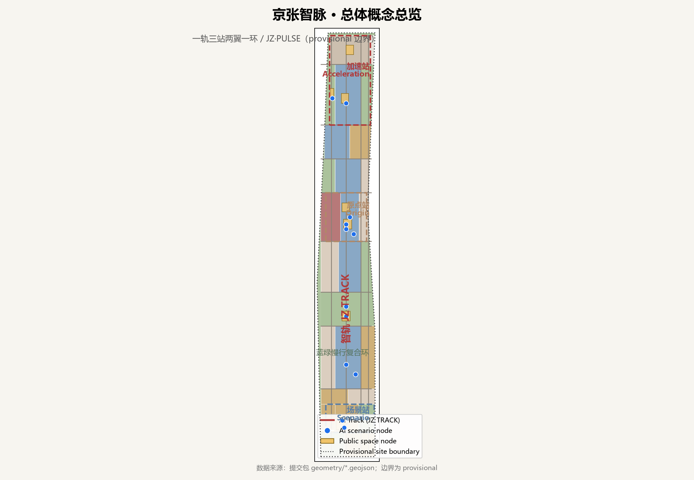
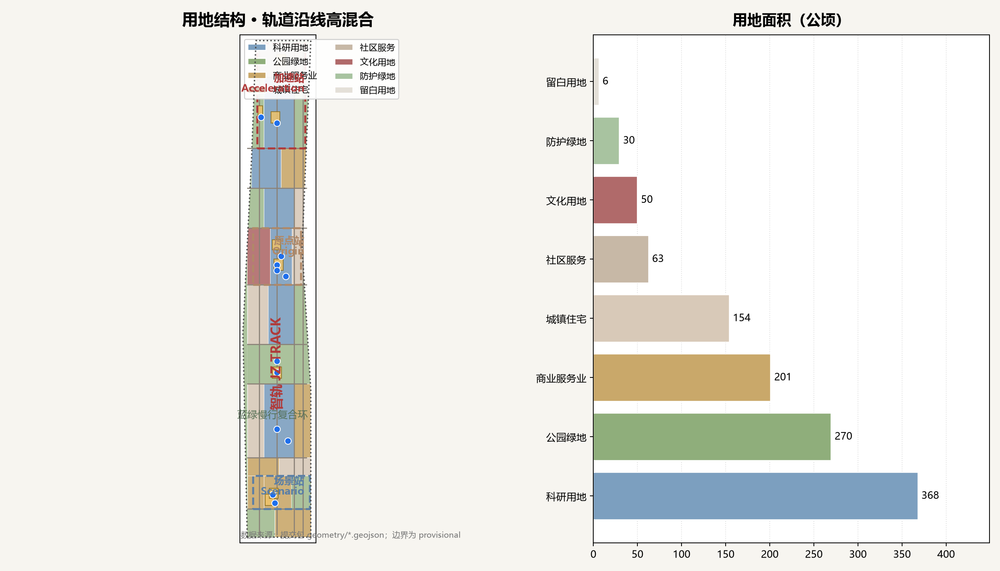
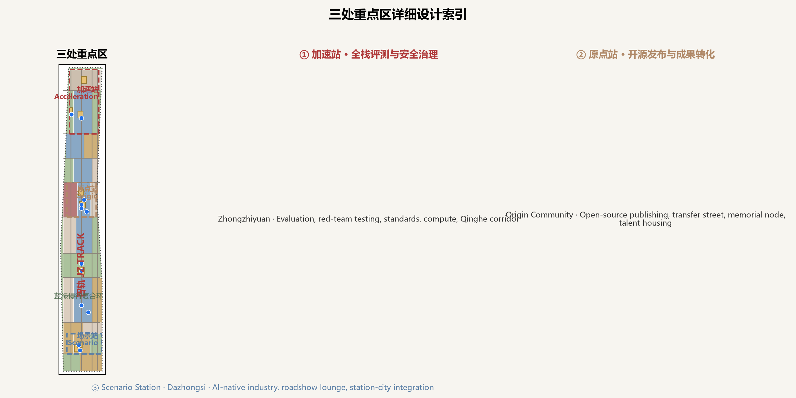
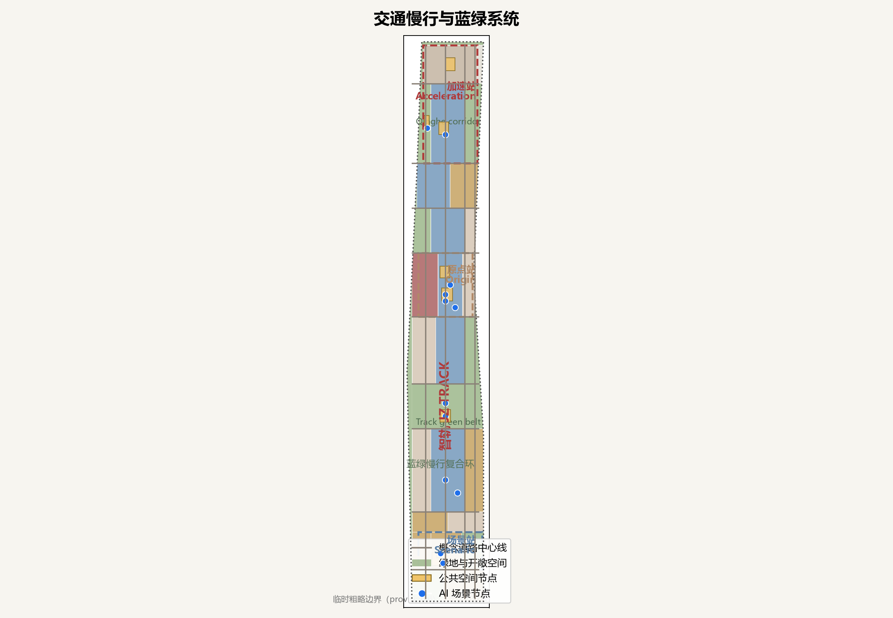
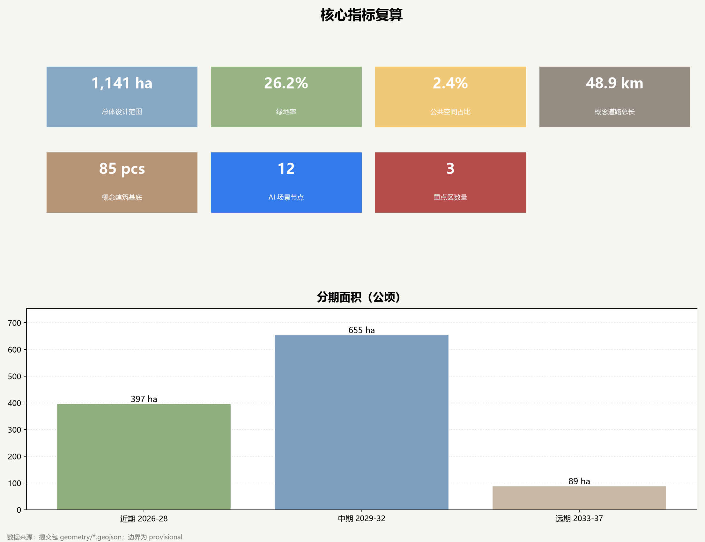

Jing-Zhang AI Pulse: An Urban Design Proposal for the AI Innovation Belt along the Centennial Railway
Organizing the Jing-Zhang Railway heritage corridor as an open innovation infrastructure for global developers through a One Track, Three Stations, Two Wings, One Loop structure, with naming, AI ecosystem cases, scenario cards, pilgrimage landmarks, and long-term operation mechanisms.
Jing-Zhang AI Pulse: An Urban Design Proposal for the AI Innovation Belt along the Centennial Railway
Design Basis and Source List
This proposal takes the Prequalification Announcement for the International Urban Design Competition for the Centennial Jing-Zhang AI Innovation Belt, published by the Haidian Branch of the Beijing Municipal Commission of Planning and Natural Resources, as its primary basis. The machine-readable brief, agent taskbook, provisional boundaries, key areas, land-use enums, planning ranges, and source registry maintained in this repository provide the structured inputs 来源 来源 深度. Before generating the package, the agent read the design brief, the allowed design space, the professional standard snapshots, and data/source_registry.json to distinguish formal-ready evidence, background-only material, and provisional clues 来源 来源.
Because official SITE_BOUNDARY and KEY_AREA polygons are not yet published, the package uses the explicitly labelled provisional boundaries 来源 来源. These polygons support generation, self-check, visualization, and design discussion only; they are not an official redline, an approval basis, a precise area basis, or a statutory control 空间数据 空间数据 指标. Every area, ratio, and scale in the text can be recomputed from geometry/*.geojson and metrics.json 指标; the complete source, assumption, and copyright records are in sources.json, assumptions.json, and report/copyright_statement.md.
This proposal is an open co-creation concept for professional teams: design judgments are written for people, while the evidence chain is left to machines 标准 深度. Floor area ratio, building height, road redlines, demolition decisions, and engineering conditions remain pending official regulatory-plan confirmation 标准.

Three-Level Scope Framework
The work follows the three levels defined in the announcement: the coordinated research area of about 43.6 square kilometres addresses the world-class AI ecosystem and future urban form; the overall design area of about 11.4 square kilometres addresses urban renewal, land use, transport, municipal support, and urban character; the key detailed-design area of about 368.4 hectares covers the three key areas 来源 指标 深度. Strategy determines the overall structure, the structure determines land-use districts, and districts determine public space, transport, and phasing 空间数据 空间数据.
The proposal introduces a spatial structure called "One Track, Three Stations, Two Wings, One Loop" (JZ·PULSE). The Track is the "AI Track" along the Jing-Zhang heritage park, running from Dazhongsi through the AI Origin Community to Zhongzhiyuan and carrying slow mobility, public space, AI experiences, and cultural narrative 空间数据. The three stations are the Origin Station, Acceleration Station, and Scenario Station mapped onto the three key areas 空间数据. The two wings are the Zhongguancun technology-service wing and the Xiaoyuehe scenario-empowerment wing. The Loop is a blue-green slow-mobility loop linking the heritage park, Qinghe, Xiaoyuehe, and university green networks 空间数据 深度. This is a working framework, not a new redline 标准.
Because all three boundaries are provisional, the spatial relationships are directional 深度. When official polygons are published, site_boundary.geojson, land_use.geojson, buildings.geojson, roads.geojson, green_space.geojson, public_space.geojson, and phasing.geojson must be regenerated inside the official boundary and all metrics recalculated 空间数据 指标.

Coordinated Research Area: Industry and Future City Research
The coordinated study organizes the three positioning themes (Centennial Jing-Zhang Culture Belt, Urban AI Life Experience Belt, AI Integration Innovation Belt) and the five functions (full-stack independent innovation, world-class AI ecosystem, AI+ scenario empowerment, intelligent AI living city, and global voice in AI governance) into one operable innovation chain: universities and open-source communities originate, Zhongzhiyuan accelerates and evaluates, Dazhongsi converts and receives guests, and the wings provide capital, services, and scenarios 来源 标准 深度.
Naming and visual identity. The primary name is "Jing-Zhang AI Pulse" (JZ·PULSE): Jing-Zhang anchors place and history, while Pulse refers to the innovation rhythm of the AI era — data, compute, talent, and capital flowing along the railway. The naming system uses a station metaphor: Origin Station (AI Origin Community), Acceleration Station (Zhongzhiyuan), and Scenario Station (Dazhongsi); the public-space names are JZ TRACK and JZ LOOP; the annual event is JZ PULSE WEEK. The logo direction combines two parallel rail lines with a signal pulse to form a double reading of "JZ" and an infinity symbol, using railway red, AI blue, and urban grey with open-source licensed fonts 深度. This identity is an original concept without any enterprise trademark or unauthorized graphic.
Seven global AI ecosystem cases. ① Stanford Research Park shows long-horizon university–industry land coupling, suggesting university-anchored industrial space around Haidian campuses 来源; ② Cambridge Science Park shows park-level operation and technology-transfer services, suggesting one-stop publishing, legal, and investment services in the Origin Community 来源; ③ Pangyo Techno Valley shows government-anchored clustering and metro-oriented districts, suggesting station-area integration at Dazhongsi 来源; ④ Singapore's one-north shows work-live-play-learn mixed development, suggesting green exchange and talent services in Zhongzhiyuan 来源; ⑤ Berlin Adlershof shows the conversion of a post-industrial site into a science city, suggesting retain-structure, replace-function renewal along the corridor 来源; ⑥ Tsukuba Science City shows national research infrastructure with a talent community, suggesting public testbeds and compute platforms for full-stack autonomy 来源; ⑦ Hangzhou Yunqi Town shows event-driven ecosystem agglomeration, inspiring JZ PULSE WEEK and recurring activity systems 来源. These cases are background references only and do not endorse any park or company 来源.
The lessons translate into three mechanism types: spatially, flexible industrial space, public publishing venues, and test corridors along the Track 空间数据; operationally, open days, hackathons, and evaluation events activate nodes 空间数据; and in governance, data compliance, human review, and citizen feedback close the loop for AI scenarios 深度 指标.
Overall Design Area: Urban Renewal and Regulatory-Plan-Level Urban Design
The overall design organizes land use at regulatory-plan depth. Using the national territorial land-use classification, the provisional boundary is partitioned into 29 land-use districts: about 368 hectares of scientific research land (0802), about 201 hectares of commercial services (05), about 154 hectares of residential land (0701), and about 299 hectares of green and open space (1401/1402), all recomputed from geometry/land_use.geojson 空间数据 指标. Commercial and residential proportions are likewise recomputed 指标, following the national classification guide 标准.
The spatial gradient along the Track runs "south for receiving guests, centre for origination, north for acceleration": Dazhongsi carries international roadshows and enterprise services, the Origin Community carries open-source publishing and technology transfer, and Zhongzhiyuan carries evaluation, safety governance, and compute services 空间数据 空间数据 深度. Renewal is primarily retention and function replacement: existing residential and campus areas are retained and lightly upgraded, while industrial districts follow a "retain structure, renovate space, add a few landmark nodes" principle 空间数据 深度 指标.
Development intensity, building height, and setback controls remain pending official confirmation 深度; the proposal only uses conceptual floor counts (generally 6–8 storeys) to express massing relationships 空间数据 指标 深度. Road centre lines, municipal layouts, and public-service distribution are conceptual 空间数据 指标 and must be confirmed by formal transport and municipal studies 深度.
Detailed Design of Key Areas
Each key area is developed as a readable mini-proposal covering positioning, spatial structure, building renewal, transport and slow mobility, public space, AI scenarios, and implementation risks 深度 空间数据.
Zhongzhiyuan AI Acceleration Area (Acceleration Station). The area is positioned as a public "test ground" for full-stack independent innovation and AI governance voice: the core hosts model evaluation, red-team safety testing, standards workshops, and compute services 空间数据 空间数据; the Qinghe waterfront becomes a low-carbon innovation corridor 空间数据; the northern end hosts talent community services 空间数据. Renewal relies on function replacement of research buildings, with new nodes concentrated around the test plaza 空间数据. Key risks include open-test safety, compute energy use, and data compliance 深度.
Beijing AI Origin Community (Origin Station). Positioned as the "code-to-city" starting point for campus-adjacent origination and global open-source collaboration: the western cultural district hosts the open-source publishing hall, the contribution honor wall, and a memorial node 空间数据 空间数据 空间数据; the central research district hosts the campus technology-transfer street 空间数据; the eastern side hosts the talent community 空间数据. Campus, park, and neighbourhood are stitched by slow mobility, focusing on the Qinghuayuan Station memorial node and transit interchange 空间数据 空间数据. Risks include campus boundaries, property rights, and ground-floor program coordination 深度.
Dazhongsi AI Industry Cluster (Scenario Station). Positioned as a reception hall for AI-native industry and international exchange: the core hosts agents, intelligent terminals, content consumption, and data-element services 空间数据 空间数据; the station plaza and roadshow lounge form the core of four-quadrant pedestrian connectivity 空间数据 空间数据; the eastern green space buffers the district 空间数据. Buildings are mainly stock renovation and station-city integration 空间数据. Risks include station retrofitting, utility relocation, and property consolidation 深度.

AI Innovation Ecosystem, Personas, and AI+ Scenarios
The ecosystem is organized in four stages — originate, accelerate, convert, and serve: the Origin Community connects universities and open-source communities, Zhongzhiyuan provides evaluation and compute, Dazhongsi links industry and international markets, and the wings supply capital, intellectual property, and life services 来源 标准 深度.
Six user personas. ① Open-source developers need publishing, collaboration, testing, and community reputation, served by the Origin publishing hall and code wall 空间数据; ② startup teams need low-cost offices, compute access, and product testbeds, served by the shared test ground in Zhongzhiyuan 空间数据; ③ university faculty, students, and researchers need technology transfer and cross-campus collaboration, served by the transfer street 空间数据; ④ enterprise executives and international visitors need showrooms, roadshows, and premium hospitality, served by the Dazhongsi roadshow lounge 空间数据; ⑤ residents need commuting, leisure, and low-disruption renewal, served by the Track green belt and community plazas 空间数据; ⑥ city managers and public-service workers need an explainable governance interface, served by the civic-agent window 空间数据.
Twelve scenario cards, including four industrial test-and-validation scenarios. 01 Open-source publishing hall (Origin cultural district): publishing and contribution display for developers, operated by a community alliance with aggregate-only statistics 空间数据. 02 Model evaluation and red-team test ground (Zhongzhiyuan, industrial test): safety evaluation and standards workshops for model companies with professional oversight and human review 空间数据. 03 Edge-compute station (along the Track, industrial test): green compute and low-power device testing with authorized energy and compute data 空间数据. 04 Autonomous delivery and robotaxi interchange test corridor (southern Track, industrial test): serving delivery companies and autonomous driving tests with traffic permits and safety redundancy 空间数据.
05 Data-element compliance sandbox (Dazhongsi, industrial test): experimenting with data circulation under authorization, anonymization, and human audit without profiling individuals 空间数据. 06 AI wayfinding and accessible navigation (Track): explainable guidance with minimal sensing data 空间数据. 07 Qinghe low-carbon innovation corridor (Zhongzhiyuan): stormwater, walking and cycling, and AI environmental monitoring 空间数据. 08 Campus technology-transfer street (Origin Community): incubation, legal, IP, and investment services 空间数据.
09 International roadshow lounge (Dazhongsi): launches, negotiations, and media communication 空间数据. 10 AI education lab (Origin Community edge): AI literacy for schools and the public 空间数据. 11 AI+health station (central community): appointment-based health consultation with records staying inside the hospital district 空间数据. 12 Civic-agent governance window (Origin Community): citizens can inspect the basis of agent suggestions and give feedback, with human final review 空间数据 深度 指标.
Each scenario card is readable in the text, while complete fields (users, data, privacy, review, operator, layers, risks) are recorded in compliance_matrix.json and sources.json 深度. All scenarios follow data minimization, public sources, explainability, and human review, and do not replace planning approval 标准.
Land Use, Building Scale, and Retain-Renovate-Demolish Strategy
Land use follows the principle of "high mixing along the Track, internal gradients within districts": research, culture, and green space flank the Track, while residential and business fill the two wings; key areas show a gradient from station-front high-density reception, to mid-density R&D blocks, to low-density green edges 空间数据 深度 指标. Commercial services cover about 201 hectares, residential about 154 hectares, community services about 63 hectares, culture about 50 hectares, and these proportions match the layer 指标 指标 指标. Buffer green space covers about 30 hectares and reserved land about 6 hectares 指标 指标.
Building footprints are classified as retain, renovate, or new: existing residential and campus areas are mostly retained with light upgrades, industrial districts are mostly function-replaced, and new buildings concentrate around station-front nodes and the test plaza 空间数据 深度. These footprints are conceptual grids, not survey data or ownership; total floor area, floor area ratio, and density remain pending official regulatory-plan conditions 空间数据 深度 指标. Parcel-level retain-renovate-demolish conclusions require existing-condition surveys, ownership, and urban-renewal studies and are not asserted here 深度.
Transport, Rail, Municipal Infrastructure, and Public Services
The transport strategy is "Track first, station-city integration, slow-mobility network": a north-south slow corridor along the Track works with four conceptual longitudinal and nine transverse centre lines 空间数据 空间数据 深度. The conceptual network totals about 48.9 kilometres 指标. Each key area organizes interchange around a station: the Dazhongsi station plaza and four-quadrant connectivity, the Qinghuayuan memorial node and campus interchange, and Zhongzhiyuan access combining rail and the Qinghe waterfront 空间数据 空间数据.
Municipal and new infrastructure combine edge compute, green energy, and conventional networks: edge-compute stations, distributed energy, and smart pole prototypes along the Track are conceptual and require utility, fire, and grid confirmation 空间数据 深度. Road redlines, utility sections, parking, and accessibility remain pending formal studies 空间数据. Public services are configured in three families — innovation services (roadshow, incubation, legal), talent services (community, education, health), and city services (governance window, event space) — pending population and facility studies 深度.

Blue-Green Network, Public Space, and Urban Character
The blue-green system uses a "one Track, one river, one loop" skeleton: the Track green belt runs north-south, the Qinghe waterfront forms a low-carbon innovation corridor, and Xiaoyuehe with university green networks links east-west 空间数据 空间数据 深度. Green space covers about 299 hectares 指标, a green ratio of about 26.2% 指标. Public space comprises eight plazas and nodes covering about 27.9 hectares, about 2.4% of the site 指标 指标 空间数据. These ratios support innovation exchange, daily leisure, and event hosting, and will be recalculated on official boundaries.
Four AI pilgrimage landmarks and honor-display nodes. ① "Origin Pulse Monument" at the Qinghuayuan memorial node, using sleeper-and-milestone language to record the start of Chinese railway self-innovation and open-source contribution 空间数据; ② "Open-Source Contribution Honor Wall" at the Origin publishing plaza, with updatable digital and physical records of outstanding annual contributions 空间数据; ③ "AI Milestone Sleepers" embedded annually along the Track green belt to mark open-source projects, governance outcomes, and urban AI practices 空间数据; ④ "Global Developer Honor Gallery" in the Dazhongsi roadshow lounge, showing contributors and projects bilingually 空间数据. Landmarks, signage, logos, and fonts must be rights-cleared; conceptual landmarks are not approved construction 标准.
Urban character follows a three-part narrative — railway memory in the south, campus fabric in the centre, and AI future interface in the north: Dazhongsi presents station-city integration with digital showcases, the Origin Community presents campus-scale red brick and open frontages, and Zhongzhiyuan presents research campus with blue-green environment 深度 深度. Building style, roof, and colour controls should be deepened after regulatory and urban-character studies are published 标准.
Renewal Projects, Implementation Policy, and Phasing
The renewal list organizes twelve conceptual projects around stitching, conversion, testing, and reception: JZ-01 Track slow-mobility gap stitching, JZ-02 Dazhongsi four-quadrant pedestrian connectivity, JZ-03 roadshow lounge public realm, JZ-04 Origin publishing hall and honor wall, JZ-05 campus technology-transfer street, JZ-06 Qinghuayuan memorial node, JZ-07 model evaluation and safety-governance centre, JZ-08 Qinghe low-carbon corridor, JZ-09 edge-compute and green-energy station, JZ-10 test corridor and delivery interchange, JZ-11 civic-agent governance window, and JZ-12 PULSE WEEK route and signage 深度 空间数据.
Phasing runs near-term pilot (2026–2028, about 397 hectares), mid-term renewal (2029–2032, about 655 hectares), and long-term deepening (2033–2037, about 89 hectares) 指标 指标 指标, with spatial extents in the phasing layer 空间数据 空间数据 深度. The near term starts with lightweight operations, public space, and publishing nodes without heavy construction; the mid term combines regulatory-plan and property conditions; the long term deepens reserved and structural projects. Policy suggestions include a renewal coordination platform, flexible industrial-space supply, scenario-opening mechanisms, data-compliance guidance, and public participation, all conceptual 来源.
Global AI event system and long-term operation. The proposal introduces an annual "JZ PULSE WEEK" brand each September around the Jing-Zhang railway completion commemoration, with open-source conferences, model-evaluation open days, hackathons, roadshows, and international communication 来源. Standing operations include quarterly publishing at the open-source hall, appointment-based test-corridor opening, annual honor-wall updates, and a bilingual portal for outcomes 空间数据. A joint operations committee of district platforms, enterprise alliances, universities, and developer communities is suggested to publish annual operation and calibration reports 深度 深度.
Metrics, Area Recalculation, and Compliance Matrix
Metrics are organized in three classes. First, spatial metrics recomputed from submitted geometry: overall area about 1141.3 hectares, three key areas, building count, and twelve scenario nodes 指标 指标 指标, together with green ratio, public-space ratio, road length, and phasing areas 指标 深度. Second, control metrics (floor area ratio, height, density, setbacks, redlines) remain pending official conditions 空间数据 深度. Third, performance metrics (AI innovation index, talent density, industry scale, event participation) require official statistics and operational calibration 指标.
All known metrics are recomputed from geometry/*.geojson and metrics.json, with formulas, source files, and assumptions recorded item by item 空间数据 空间数据 指标. compliance_matrix.json covers all mandatory announcement tasks (1.3–1.5) and agent.1–agent.6; standard_matrix.json covers the five mandatory standards; design_depth_matrix.json covers the fifteen required design-depth items 深度 深度.

Risk, Copyright, and Compliance
Key risks and responses: ① data risk — provisional boundaries are not redlines or precise-area bases, and all layers must be recalculated when official polygons arrive 空间数据 深度; ② regulatory risk — development intensity and engineering conditions await official confirmation 标准; ③ scenario risk — privacy, compute energy, and public safety require data minimization, human review, and operational authorization 来源; ④ implementation risk — phasing and project lists are conceptual, with operators, funding, and approvals pending 空间数据 深度; ⑤ copyright risk — naming, logo, and drawings are original, fonts and assets are rights-cleared, and case sources serve background only 来源 标准.
This proposal does not claim official approval, approved regulatory plans, final land ownership, confirmed construction scale, or guaranteed implementation; all concepts are submitted as open co-creation output for professional deepening 标准. The complete copyright statement is in report/copyright_statement.md; sources, assumptions, and metric limits are recorded in sources.json, assumptions.json, and metrics.json 深度.
References
The provenance, licenses, and permitted uses of the materials below are recorded in the full source list 来源 来源.
- Beijing Municipal Commission of Planning and Natural Resources, Haidian Branch: Prequalification Announcement for the International Urban Design Competition for the Centennial Jing-Zhang AI Innovation Belt (2026-05-09)
- Agent-facing taskbook excerpt for the Centennial Jing-Zhang AI Innovation Belt open call (user-provided, cleared, 2026-05-18)
- Beijing Municipal Science and Technology Commission and Zhongguancun Administrative Committee: "Three Areas, Two Wings: Building a World-Class AI Cluster" (2026-04-03)
- Haidian District Government: "1+X+1" Modern Industry System (2026-03-02)
- Ministry of Natural Resources: Land Use and Sea Use Classification Guide for Territorial Spatial Survey, Planning, and Use Control (2023-11-22)
- Ministry of Housing and Urban-Rural Development: Measures for Urban Design Management (2017-03-14)
- Ministry of Housing and Urban-Rural Development: Measures for the Compilation and Approval of Regulatory Detailed Plans for Cities and Towns
- Stanford Research Park, Cambridge Science Park, JTC one-north, and Berlin Adlershof official sites; public entries on Pangyo, Tsukuba, and Yunqi Town (retrieved 2026-08-10)
- open-city-ai/haidian repository: brief/site-package, data/source_registry.json, docs/, and skills/urban-design-ai-submission/
- Complete machine index:
sources.json,metrics.json,compliance_matrix.json,standard_matrix.json,design_depth_matrix.json